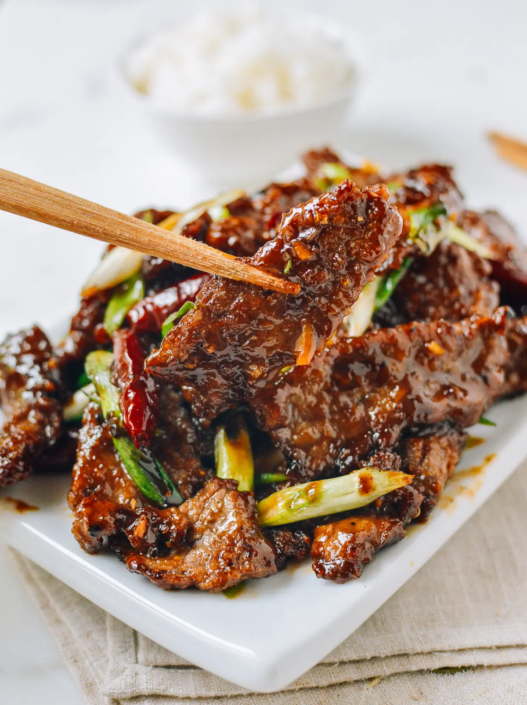

Mongolian Beef
- Total time45 mins
- Serves4
- Ingredients18
- Steps7

Ingredients
For the beef marinade
- 1 pound flank steak (sliced against the grain into 1/4-inch/6mm thick slices)
- 2 teaspoons neutral oil (such as vegetable, canola, or avocado oil)
- 2 teaspoons Shaoxing wine (or dry cooking sherry, optional)
- 1 teaspoon soy sauce
- 1 tablespoon cornstarch
- 1 tablespoon water
- 1/4 teaspoon baking soda
For the sauce
- 1/4 cup light brown sugar
- 3/4 cup hot water (or hot low sodium chicken or beef stock)
- 1/4 cup soy sauce
- 1 teaspoon dark soy sauce (optional)
For coating and searing the beef
- 1/2 cup cornstarch
- 2/3 cup neutral oil
For the rest of the dish
- 1 teaspoon ginger (minced)
- 8 dried red chili peppers (optional)
- 3 cloves garlic (finely chopped)
- 4 scallions (white and green parts separated, cut on the diagonal into 2-inch/5cm pieces)
- 1 1/2 tablespoons cornstarch (mixed with 2 tablespoons/30ml water to make a slurry)
Directions
- Combine the sliced beef with the marinade ingredients (the neutral oil, Shaoxing wine, light soy sauce, cornstarch, water, and baking soda. Marinate for 1 hour. The beef should still be quite moist after it has marinated. If it looks too dry, add a tablespoon of water to it.
- In a small bowl, mix the sauce. Dissolve the brown sugar in the hot water or stock, then stir in the light and dark soy sauces.
- Next, dredge the marinated beef slices in the cornstarch until thoroughly coated.
- Heat 2/3 cup neutral oil in a wok over high heat. Just before the oil starts to smoke, spread the flank steak pieces evenly in the wok, and sear for 1 minute on each side, until you have a crispy coating. Turn off the heat and transfer the beef to a plate.
- Drain the oil from the wok (save it for other cooking), leaving 1 tablespoon behind. Turn the heat to medium-high. Add the ginger and dried chili peppers, if using. If you want the dish spicier, break 1-2 chilies in half. After about 15 seconds, add the garlic and white parts of the scallions. Stir for another 15 seconds and add the premixed sauce.
- Let the sauce simmer for about 2 minutes, and slowly stir in the cornstarch slurry mixture. Cook until the sauce has thickened enough to coat the back of a spoon.
- Add the beef and green parts of the scallions, and toss everything together for another 30 seconds. The scallions should just be wilted, and there should be almost no liquid, as the sauce should be clinging to the beef. If you still have sauce, increase the heat slightly and stir until thickened. Plate and serve with steamed rice!